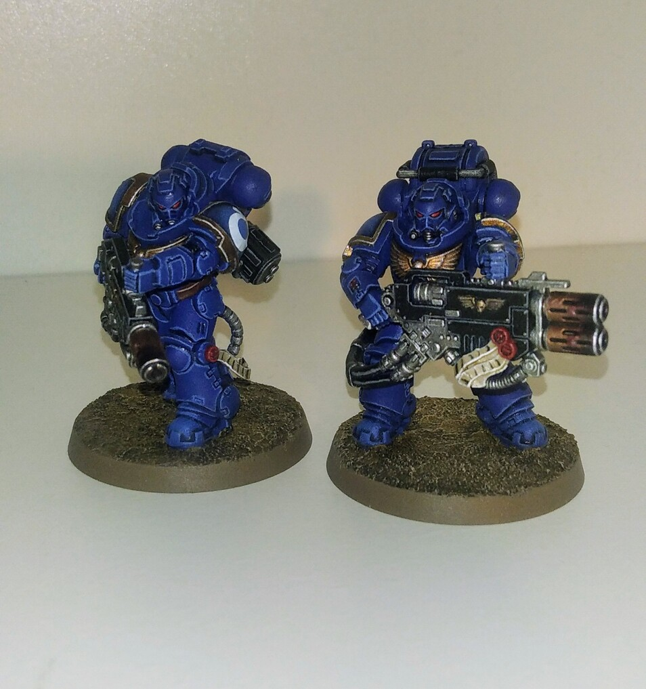

Article 1 : Présentation personnelle, étudiant en développement web
Présentation
Anecdote
Article 2 : Pourquoi choisir le DEUST WMI ?
Pourquoi ce choix
Implication dans ma vision personnelle et mon projet professionnelle
Article 3 : Point de progrès et stratégie pour réussir le DEUST WMI
Mes forces et mes points faibles et leurs risques
Stratégies contre ces risques
Article 1 : Présentation personnelle, étudiant en développement web
Mots : 456
Présentation :
Je m’appelle Margouet Nathan et je suis originaire de Marcillac-Vallon dans l’Aveyron. Au lycée, j’ai passé un BAC général avec, comme option, NSI et SVT. Grâce à la NSI, j’ai développé encore plus mon intérêt concernant l’informatique et c’est ce qui m’a amené à faire une licence informatique à l’INU Champollion d’Albi.
Durant les quatre années que j’ai passé dans la licence informatique, j’ai pu voir plus en détails les différents aspects liés à l’informatique et de me faire un avis sur chacun d’entre eux, et celui qui m’a le plus intéressé, c’est le développement web. Au cours de la licence, j’ai pu effectuer un stage dans l’entreprise de développement, Laëtis.
Pendant ce stage, j’ai effectué deux tâches que j’ai grandement apprécié de faire, de la vérification de site développé par Laëtis pour trouver des problèmes qui seraient présents, et de l’intégration de contenu sur l’un de leurs sites qui était en cours de développement. Ces deux activités m’ont permis, d’une part, de comprendre comment certains des problèmes que j’avais trouvés sur les sites étaient causés et ensuite de voir en action une partie du développement web frontal (front end).
Mon stage chez Laëtis m’a conforté dans l’idée que le développement était la voie que je devais suivre, car j’admire l’aspect créatif qui en ressort et la satisfaction de voir évoluer un projet qui, au fur et à mesure, devient fonctionnel et utile.
Anecdote :
Selon moi, ma plus grande qualité et la persévérance. Cela peut déjà se voir par le fait que j’ai redoublé deux années dans la licence informatique de l’INU Champollion alors que j’aurais pu laisser tomber dès le départ et arrêter les études supérieures, mais j’ai décidé de continuer. Un bon exemple qui illustre ma persévérance, c’est avec une de mes passions qui est le maquettisme et plus précisément avec Warhammer 40 000, où il faut constituer son armée avec diverses figurines qu’il faut d’abord monter puis peindre.
Quand j’ai peint mes premières figurines, je faisais pleins d’erreur que j’arriver à corriger, mais je trouvais que le résultat final n’était pas satisfaisant. Plus tard, je me suis acheté d’autres figurines, plus d’équipement et je me suis beaucoup plus renseigné sur le sujet pour apprendre de nouvelles techniques me permettant d’améliorer le rendu final. Au départ, j’avais peur de les utiliser et d’aggraver le rendu final, mais c’était le contraire. Je commettais moins de fautes et même si j’en faisais, je les corrigeais jusqu’à ce que j’aie le rendu voulu, même si ça devait prendre plusieurs heures.
Depuis que je me suis amélioré, je n’ai pas retouché mes premières figurines pour les rendre meilleurs visuellement, car cela me permet de voir les progrès que j’ai accomplis.

Figurines de Warhammer 40 000 par Margouet Nathan
Article 2 : Pourquoi choisir le DEUST WMI ?
Mots : 435
Pourquoi ce choix :
A la suite de mon stage chez Laëtis, j’ai décidé de me réorienter dans un enseignement qui soit centré sur le développement web, car je trouvais que la licence informatique que je suivais était trop générale. Ainsi, après quelques recherches, j’ai découvert le DEUST Webmaster et métiers de l’internet de l’université de Limoges.
Ce qui m’a intéressé et convaincu dans cette formation, ce sont ses objectifs, qui me permettront d’acquérir plus de connaissances sur comment déployer et gérer un site web tout en le rendant dynamique visuellement. L’autre point qui me plait énormément, c’est de rendre des projets chaque semaine en équipe, permettant d’en apprendre beaucoup plus grâce aux situations concrètes qu’on devra accomplir sans devoir passer par beaucoup de théories, ce que je reproche à la licence informatique. De plus, cela permet d’être plus à l’aise avec le travail d’équipe et de mieux nous préparer à nous intégrer dans le milieu professionnel, ce qui est renforcé par les stages à effectuer à chaque fin d’année.
Enfin, concernant la modalité d’enseignement à distance, cela m’est fortement utile, car, pour être franc, je n’ai malheureusement pas les moyens d’habiter dans une autre ville pour suivre des études supérieures sur place, et je préfère éviter d’être dans un travail étudiant par peur d’être moins concentré sur mes études et d’échouer. L’autre avantage de l’enseignement à distance, c’est que ça me permet d’être encore plus organisé, même si j’ai déjà été confronté à ce genre de situation au lycée pendant la pandémie de la COVID.
Implication dans ma vision personnelle et mon projet professionnelle :
Le DEUST Webmaster et métiers de l’internet s’inscrit parfaitement dans ma vision personnelle, car il me permet de m’épanouir dans un domaine que, comme dit précédemment, je trouve créatif et satisfaisant par la réalisation d’un projet qui évolue pour finalement être utile à une personne. De plus, l’aspect concret de la formation me permettra d’acquérir plus facilement de nouvelles compétences et de renforcer les bases obtenues avec la licence, tout en me confrontant à des situations similaires au milieu professionnel, ce que je recherche grandement.
Concernant mon projet professionnel, j’ai pour but d’être développeur web spécialisé dans le front-end et de rejoindre une entreprise spécialisée dans le développement web. A l’aide des stages de fin d’année, j’espère pouvoir obtenir plus d’expériences pour pouvoir effectuer ce métier et d’établir des contacts avec les entreprises dans lesquelles j’aurai effectué mon stage, dans l’espoir d’avoir un emploi en leurs seins. Par ailleurs, il existe plusieurs entreprises liées à ce domaine autour de mon lieu de résidence, comme Linov, ou encore Septime.
Article 3 : Point de progrès et stratégie pour réussir le DEUST WMI
Mots : 389
Mes forces et mes points faibles et leurs risques :
Comme dit précédemment, une de mes forces est la persévérance, qui me semble nécessaire et utile pour qu’un projet soit mené à bien, sans compter qu’elle me donne la force de vouloir progresser et de continuer. Une autre de mes forces, qui me sera très utile pour cette formation et dans ma vie professionnelle, c’est l’organisation qui m’évite d’être submergé par plusieurs tâches. Cependant, cet atout s’accompagne avec un de mes traits de personnalités, je suis perfectionniste. D’un côté, ce trait m’aide à rendre des projets ou des travaux complets, car je cherche à tout prix à respecter ce qui est attendu, mais d’un autre cela rejoint un de mes points faibles.
En effet, si je n’ai pas de plan concret ou un modèle sur lequel me baser, je peux commencer à stresser par peur de ne faire que des erreurs et perdre du temps. En soit, cette faiblesse pourrait être atténuée en demandant des conseils à un professeur ou à un supérieur, mais j’ai fort tendance à ne pas demander directement de l’aide par peur de déranger, ou alors que ma question soit inutile ou stupide, ce qu’on m’a déjà reproché.
En plus de ces faiblesses, il y a un point qui peut être nocif pour moi, le repli sur soi. Cela m’arrive de ressentir ça en ayant une succession d’échecs et de voir que peu importe ce que je fais, j’ai l’impression d’échouer en continu. A cause de cet état d’esprit, je doute de mes capacités et je me sous-estime. J’ai conscience que ses faiblesses peuvent être problématiques et causes des d’échecs, mais je compte bien les surmonter pour atteindre mon but.
Je suis conscient que pour réussir, il faut que je surmonte mes faiblesses. Afin d’y parvenir, je prévois de solliciter davantage l’aide des enseignants ou de mes camarades, pour ne plus être bloqué sur un problème et de pouvoir avancer, tout en gardant à l’esprit que l’on apprend de nos erreurs. Pour éviter d’être submergé par la charge de travail, je compte utiliser un agenda afin de répartir les travaux sur plusieurs jours, puis faire les tâches simples pour avoir plus de temps sur de gros projets.
Grâce à ces stratégies, je compte mener à terme la formation et atteindre mon objectif d’être développeur web.